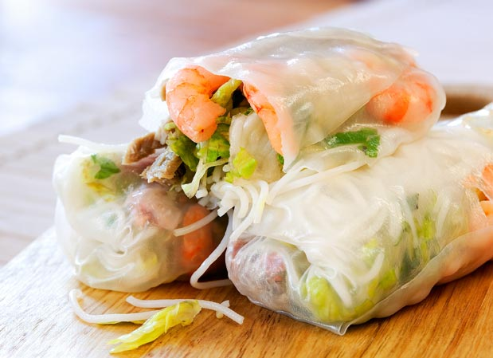

Home / Vietnam / Authentiv Vietnamese Food
Authentic Vietnamese Food
Pho

Pho is a very popular dish in Vietnam. It’s a Vietnamese noodle soup using broth and rice noodles, herbs, onion, and meat. It is commonly found through street vendors in Vietnam and many restaurants around the world. Generally, it is served with beef or chicken.
Banh Mi

Banh mi is a Viet term for "bread", translated into their version of a baguette. These baguettes are often used to make Vietnamese sandwiches, also called banh mi. They include meat, often vietnamese cold cuts, with plenty of vegetables. Street vendors also carry this delectable treat.
Spring Rolls
There are two types of Vietnamese spring rolls: Fried and Non-fried. The fried spring rolls contain minced pork, and a few vegetables, deep fried in oil. The non-fried spring rolls are often wrapped in rice paper and have shrimp, lettuce, cilantro, cucumbers, rice vermicelli, basil, and sometimes garlic chives. It is served with a dipping sauce.